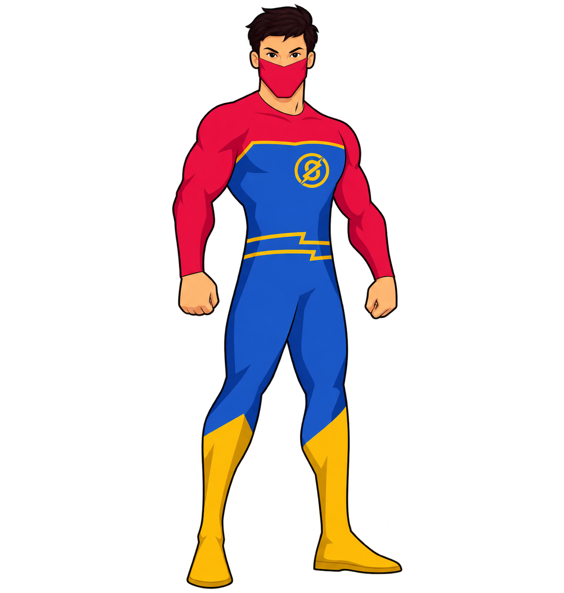
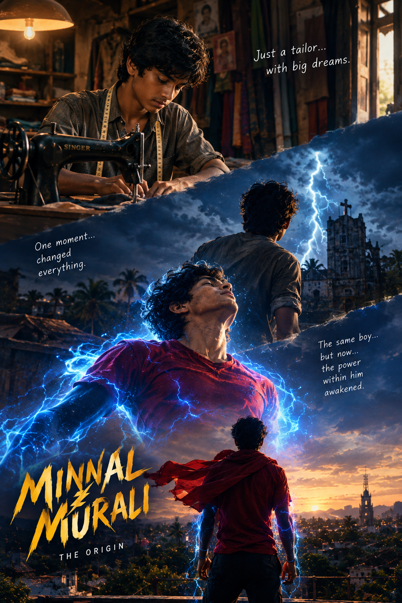

SUPER SPEED
Moves faster than anyone can see, reaching people in danger before it’s too late.

Minnal murali / HELP PORTAL
A portal for the hero who rises from the lightning to protect his people when the storm hits.
01 / SIGNAL RECEIVED
ENTRY / 01
The conversation appears immediately. No maze, no form wall—just one clear first move.
SIGNAL
Name
YOUR NAME
Enter your name
Required field
CONTROL
Start over
Keyboard friendly · visible focus
THE STORY / ORIGIN
Jaison was just an ordinary tailor until a lightning strike changed his life forever. The storm gave him extraordinary powers—and a new responsibility to protect the people around him.

THE PERSON BEHIND THE POWER
Friendly, brave, humorous, and down-to-earth. Minnal Murali may have superpowers, but he still thinks like an ordinary person from the village. He listens, cares, and steps in when people need him most.
THE PURPOSE
CAPABILITY / 04 SIGNALS
Each power is practical: it moves the visitor from a stuck moment toward a next step.
Moves faster than anyone can see, reaching people in danger before it’s too late.
Uses incredible physical power to overcome obstacles, protect people, and take on powerful enemies.
Born from the lightning strike that changed Jaison’s life, his abilities are closely connected to the storm.
Reacts instantly to danger, allowing him to move through difficult situations and control his speed.
THE HANDOFF / 02
A short intake keeps the visitor in their own words while giving the next person enough context to help.
“What should I call you?”
“How old are you?”
“Where are you right now?”
“Where can the team reach you?”
MINNAL MURALI / READY
So… tell me. How can I help?
PROGRESS
Your words next
AFTER SEND / 03
The visitor sees a clear confirmation. The site owner gets a structured signal they can act on.
CONFIRMATION
Your message is on its way to the people who can take the next step.
The handoff connects to the email integration and reports the state returned by that service.
NOTIFICATION PREVIEW
Visitor
Name: Visitor name
Age: Visitor age
Location: Visitor location
Contact
Email: visitor@email.com
Signal
Request: Visitor’s grievance or request in their own words.
Submitted
Date and time from the submission event.
EDITABLE INTEGRATION SETTING
Notification recipient
dayadc1234@gmail.com
Replace with your own email or serverless endpoint.
BUILD / TRUST / MOTION
The storm-inspired layer adds energy without making the path harder to read, use, or complete.
The conversational panel stays primary on small screens. Story modules stack below it.
High contrast, visible focus states, readable type, keyboard-friendly controls, and clear error feedback.
LIGHTNING METER
Signal strength rises as visitors explore missions and complete steps.
CURRENT STATE / MISSION EXPLORED
Hero’s Next Move
Recap the completed mission, then point toward the next story, power, or action.
THE FIRST MOVE / 04
Start a private conversation with Minnal Murali and ask for a next step.
LISTEN FIRST · FIND THE PROBLEM · PROTECT THE PEOPLE
TALK TO MINNAL ↗